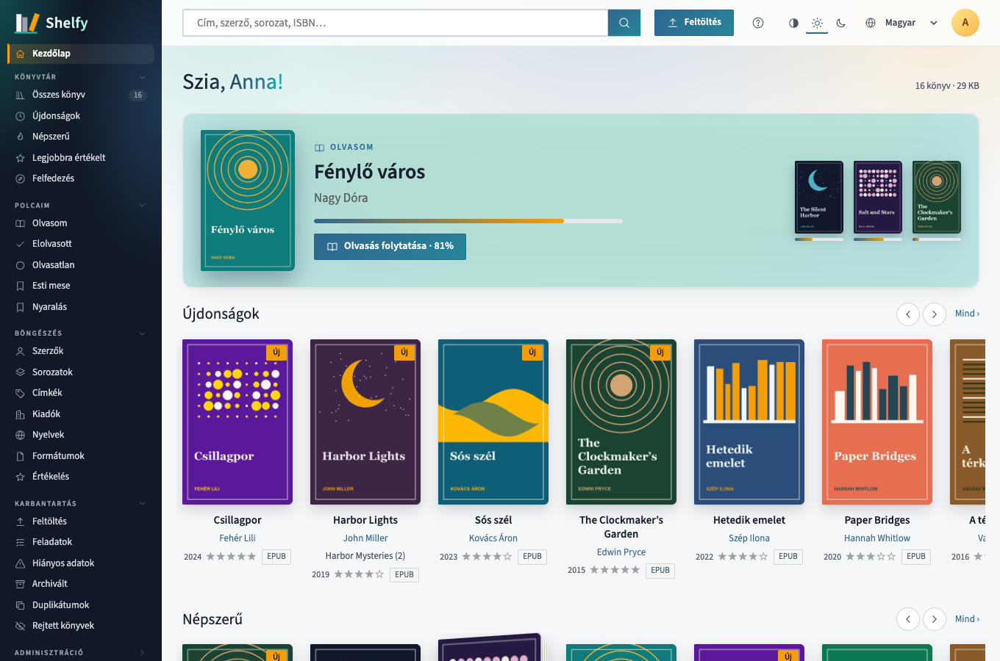
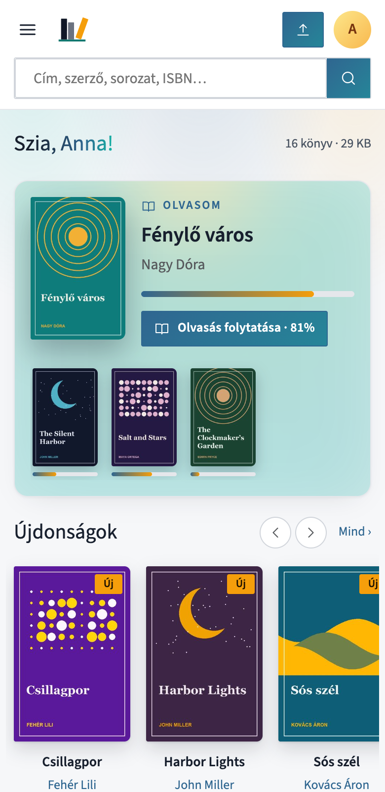
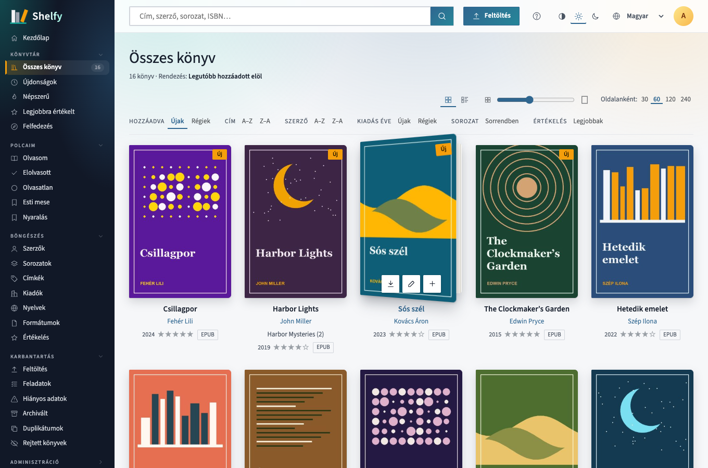
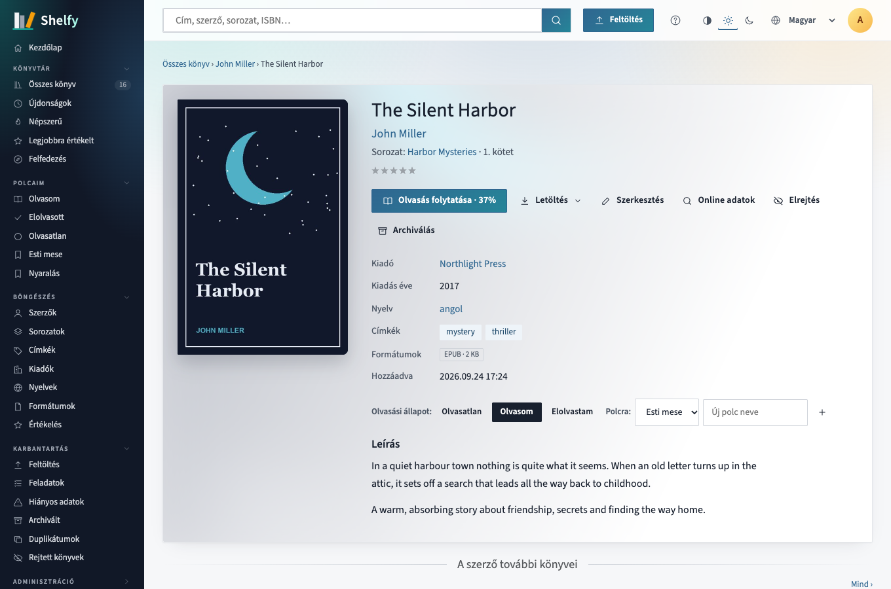
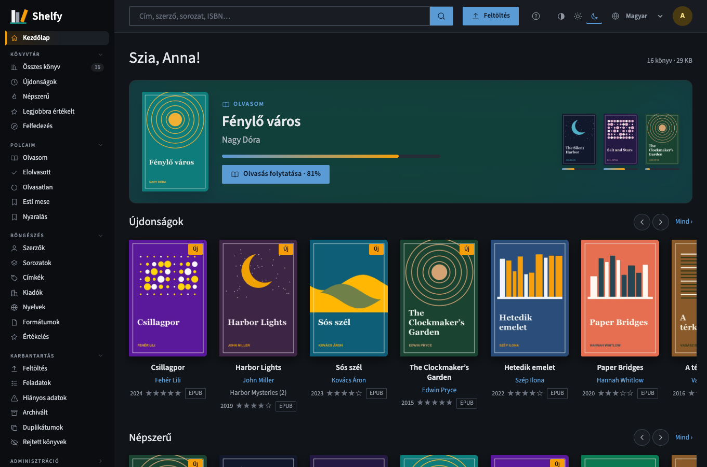

Feltöltés és ellenőrzés
Húzd be a könyveket bármilyen formátumban. A Shelfy megnézi, ép-e a fájl, megvan-e már, és mit tud kiolvasni belőle.
Töltsd fel a könyveidet: a Shelfy ellenőrzi a fájlokat, az internetről kiegészíti az adataikat és a borítót, és kereshető katalógusba rendezi őket – olvashatod a böngészőben, vagy elküldheted a Kindle-re.
Egyetlen Docker-konténer · fut NAS-on, Raspberry Pi-n vagy bármilyen Linuxon · a könyveid otthon maradnak


A fájl behúzásától addig, hogy a kanapén olvasod.
Húzd be a könyveket bármilyen formátumban. A Shelfy megnézi, ép-e a fájl, megvan-e már, és mit tud kiolvasni belőle.
Moly.hu, Google Books, Open Library, Hardcover és nemzeti könyvtárak. Te döntöd el, mit veszel át.
Beépített olvasó EPUB-hoz és PDF-hez, szövegbeállításokkal, könyvjelzőkkel és kiemelésekkel. Ott folytatod, ahol abbahagytad.
E-mailben vagy közvetlenül az Amazon-fiókodba, 200 MB-ig. A hiányzó Kindle-formátumot elkészíti.
E-ink-barát oldal JavaScript nélkül: a Kindle saját böngészőjéből is böngészhetsz és letölthetsz.
Felhasználók, szerepkörök és jogosultságok, saját polcok és olvasási állapot, választható vendégböngészés.
Szerzők, sorozatok, címkék, kiadók és nyelvek; rács és lista nézet; automatikus kategóriák.
Napi automatikus mentés, visszaállítás egy kattintással, könnyű költözés másik gépre.
A felület és a beépített súgó is, a programban szerkeszthető fordításokkal.
Reszponzív felület, amely iOS-en és Androidon appként telepíthető.
Mozgalmas, gyors, világosban és sötétben is otthonos.
A kezdőlap az éppen olvasott könyveddel nyit: haladásjelző és folytatás gomb.

A borítók könyvként kinyílnak, ha föléjük viszed az egeret; gyorsgombok a letöltéshez, a Kindle-re küldéshez és a szerkesztéshez.

Adatok, formátumok, olvasási állapot, polcok és a leírás, a borító színeivel árnyalt háttéren.

Mindenki maga választ témát és nyelvet.
Nem kell adatbázist beállítani, nincs külön szolgáltatás. Egy konténer és egy mappa.
services: shelfy: image: ghcr.io/czdanika/shelfy:latest restart: unless-stopped ports: ["18200:8080"] volumes: - /volume1/docker/shelfy:/data environment: - TZ=Europe/Budapest - DEFAULT_LANGUAGE=hu